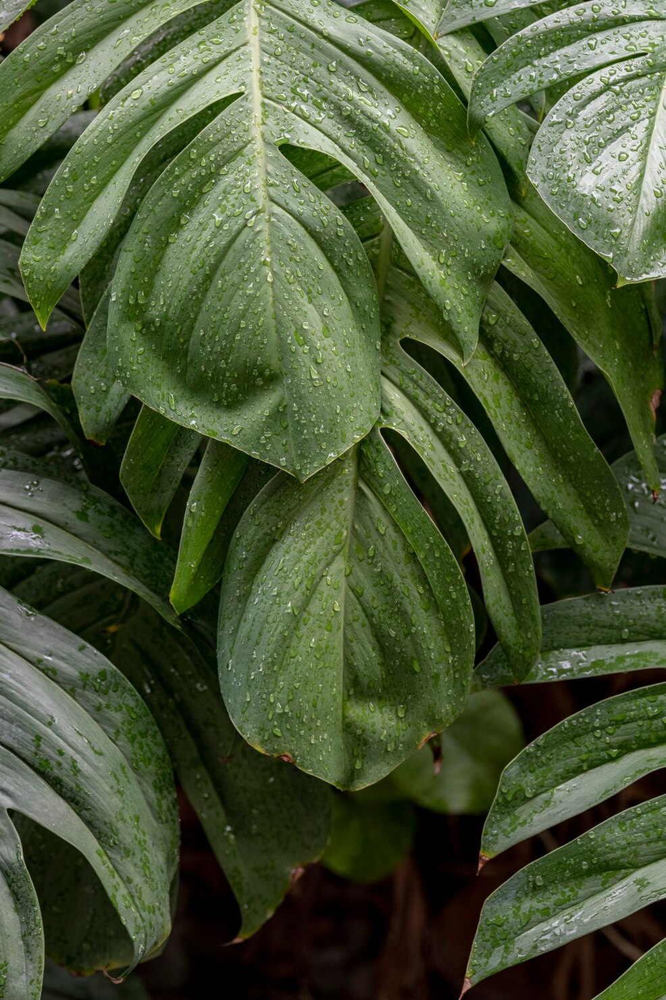
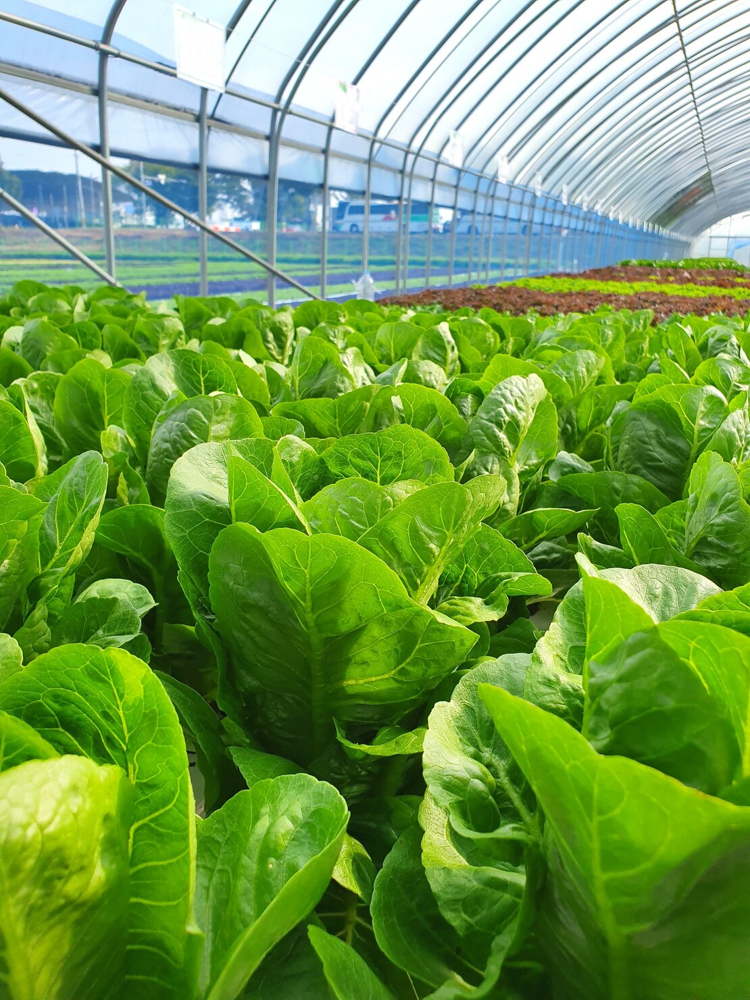
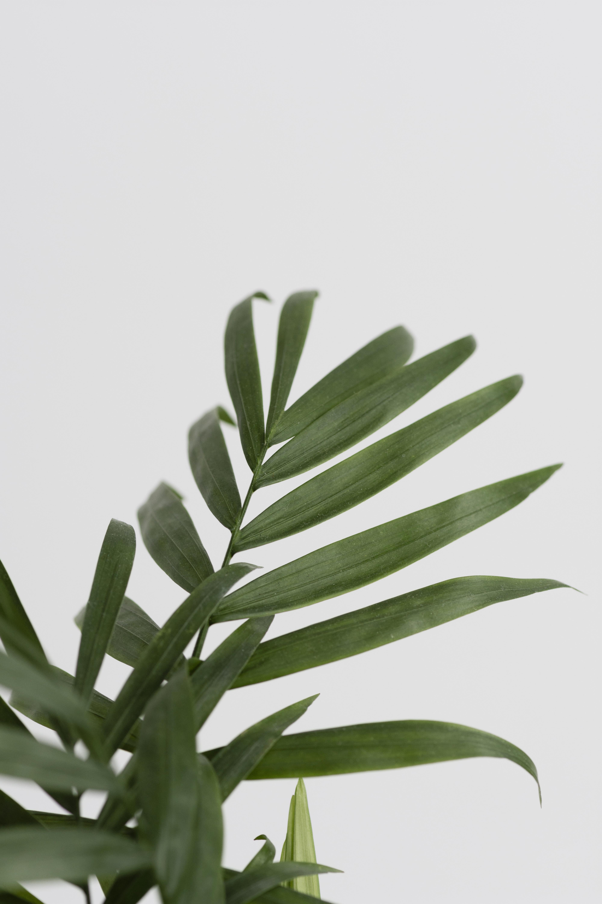
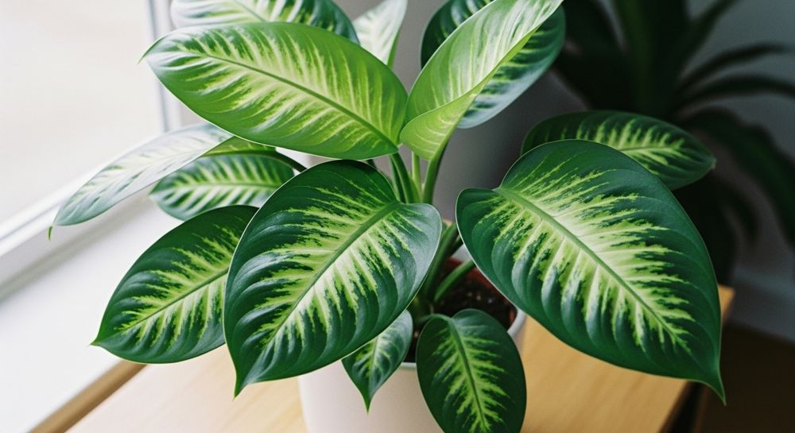

Dashboard interativo
Visualize os dados vitais da sua plantação por meio de indicadores atualizados em tempo real.
Monitore temperatura, controle a umidade e gerencie a iluminação em tempo real através de um dashboard intuitivo.


Visualize os dados vitais da sua plantação por meio de indicadores atualizados em tempo real.
Acompanhe a umidade do solo, a temperatura ambiente e o controle de irrigação em um só lugar.

Gerencie sua estufa de qualquer dispositivo conectado à internet, com interface responsiva e rápida.
Este sistema é um projeto acadêmico criado para modernizar e automatizar o controle de estufas agrícolas. O objetivo é oferecer uma interface leve, segura e responsiva para facilitar o dia a dia do produtor rural.
